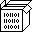

GLY is a 1-bit inline graphic format.
Gly is an inline graphics format, similar to sixels, used to draw graphics inside text files from visible ASCII characters, in which each character represents 4 vertical pixels on 16 pixels high columns. Gly assets are supported by Left, and can be generated in Noodle.
| ascii | y*4 | 4 pixels | |||||
| 0 | 0 | 0 | 0 | 0 | 0 | 0 | 0 |
The format resides entirely in within the 0x3f-0x7f range of the ascii table. At the end of each row, 0x0a denotes the end of a line. For example, a 32px high sprite, will have two line breaks. The Y position is set in increments of 4 pixels vertically for a total of 16 vertical pixels, the 0x20 advances the rendering by 1 pixel horizontally.
- 0x0a Line Feed
- 0x20 x+1
GLY Example
Each line begins with an escape code, the escape code is not display at the start of each line in the following example.
?^n~ GOb CWa ASa @Ua} NVa ?Va{ GTaq CTa{ ATa @Ta} @Ta @Ta} @Ta @Ta{ @Taq @Ta{ @Ta @Ta} @Ta @Ta @Ta @Tm~ @Td @\g @T_p @R_q @P_p HQg DSk~ BWa @O`
N^n~ _w _w _w HVkw Oax GVkw @_w ?Rmx GS_w @Rkw Oax HVkw _w GVkw @Oax ?Rkw GS_w @Rmx _w _w _w N^n~ _s _q _p Og Oc Oa N^`

Implementation
Draw a gly string in Uxntal with the screen's auto byte is set to auto-y(0x02):
@draw-gly ( chr -- ) ( cmds ) LDAk #20 NEQ ?&no-x .Screen/x DEI2k INC2 ROT DEO2 INC2 !&w &no-x LDAk #20 LTH ?&end ( opcode ) LDAk LIT "? SUB STH .Screen/y DEI2 #00 STHkr #30 AND #24 SFT OVR2 ADD2 .Screen/y DEO2 #0400 &loop STHkr OVR SFT #01 AND .Screen/pixel DEO INC GTHk ?&loop POP2 POPr .Screen/y DEO2 INC2 !&w JMP2r
incoming: 2023